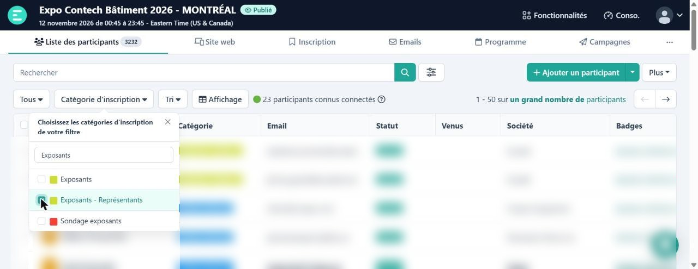
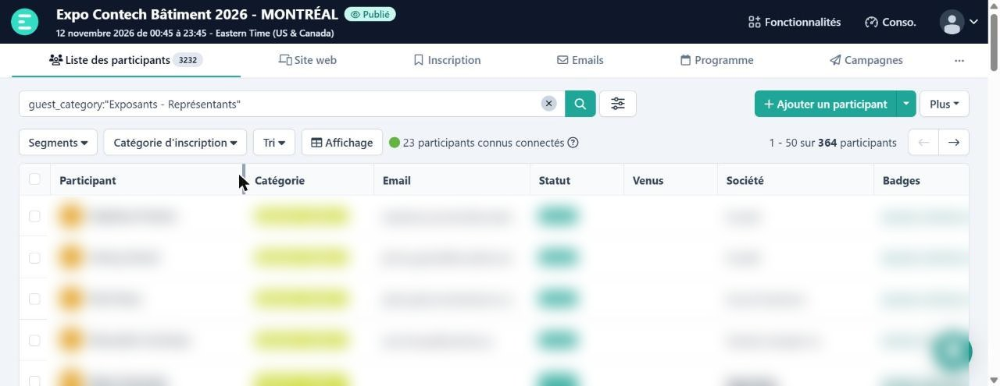
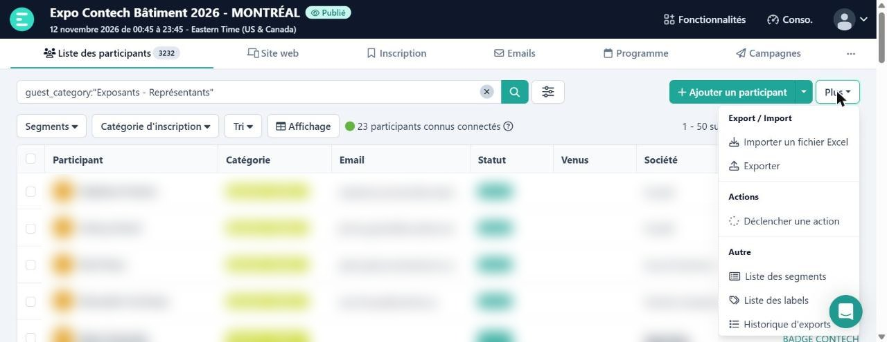
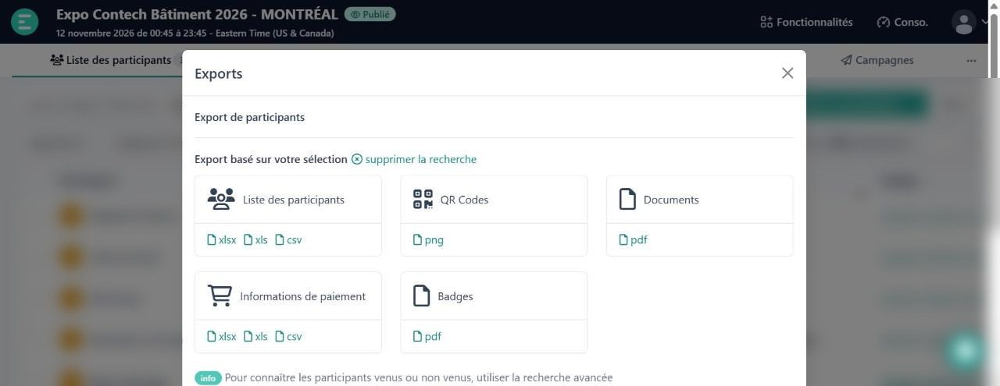
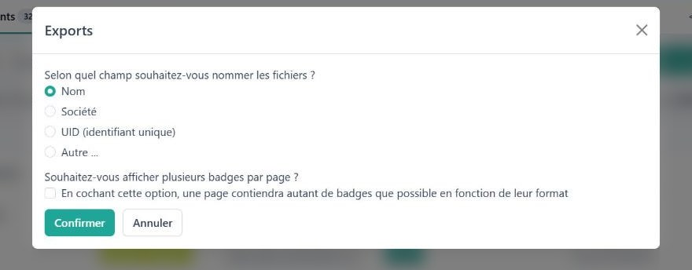
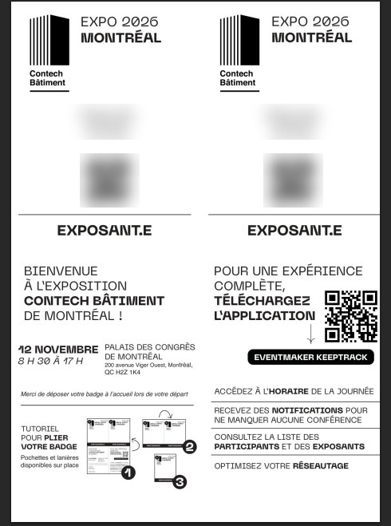

Pour préparer les badges d'avance et réduire les files à l'accueil. Ça prend environ 2 minutes par catégorie, et le fichier arrive par courriel.
Dans Liste des participants, clique sur Catégorie d'inscription, cherche la catégorie (ex. « Exposants ») et coche-la : Exposants - Représentants, Visiteurs Montreal, Conférenciers, etc.

Le filtre s'affiche dans la barre de recherche, et le nombre de badges est en haut à droite (ex. 364 participants).

En haut à droite, clique sur Plus, puis sur Exporter.

Vérifie que c'est écrit « Export basé sur votre sélection », puis clique sur pdf sous Badges.

Laisse Nom coché, coche « plusieurs badges par page », puis clique sur Confirmer.

1 à 2 minutes plus tard, tu reçois le courriel « Votre export de badges est prêt à être téléchargé ». Clique sur le lien (il est valide 7 jours) pour télécharger le fichier .zip, puis ouvre les PDF qu'il contient.
Imprime avec Ajuster à la page (format lettre), en recto seulement, puis plie chaque badge selon le tutoriel imprimé dessus.

On peut aussi revoir les exports déjà faits dans Plus → Historique d'exports.